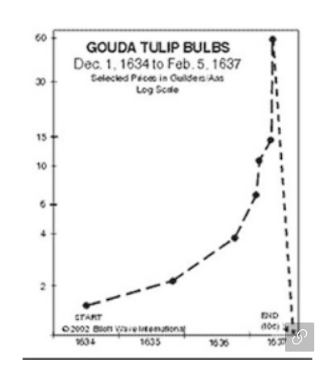

네이버 블로그 중에서 흥미로운 글이 있어서 공유하고 그 내용을 간단히 요약함.
- 스페인 지역의 유대인이 종교박해를 받고 쫓겨나서 네덜란드에 정착함- 네덜란드에 정착한 유대인은 보석, 소금, 금 무역 등으로 큰 돈을 벌게 됨
- 네덜란드에 넘쳐나던 돈은 튤립으로 투기가 몰리게 되고 튤립가격이 천정부지로 치솟다가 4개월만에 99%의 가격이 폭락함
- 정상적인 화폐의 기능이 작동하지 않는 나라에서는 비트코인, 이더리움 정도는 어느정도 가치를 가질 수 있다고 보지만 나머지 코인의 경우 튤립 광풍의 역사를 반복한다고 생각됨.